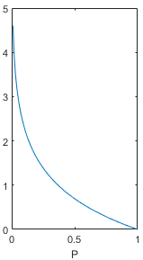
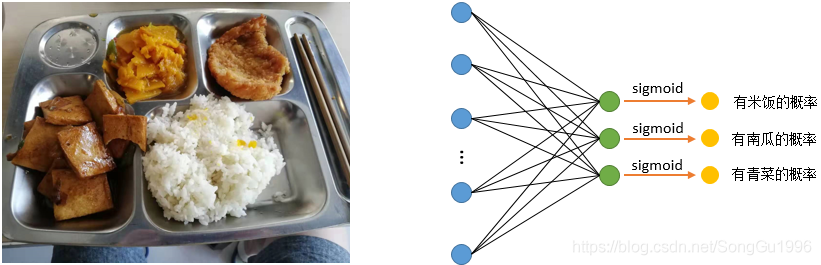

交叉熵损失函数（Cross Entropy Loss）一¶
交叉熵损失函数（Cross Entropy Loss）在分类任务中出镜率很高，在代码中也很容易实现，调用一条命令就可以了，那交叉熵是什么东西呢？为什么它可以用来作为损失函数？本文将会循序渐进地解答这些问题，希望能对大家有所帮助。
1. 交叉熵（Cross Entropy）¶
交叉熵是信息论中的概念，想要理解交叉熵，首先需要了解一些与之相关的信息论基础。
1.1 信息量（本节内容参考《深度学习花书》和《模式识别与机器学习》）
信息量的基本想法是：一个不太可能发生的事件居然发生了，我们收到的信息要多于一个非常可能发生的事件发生。
用一个例子来理解一下，假设我们收到了以下两条消息：
A：今天早上太阳升起
B：今天早上有日食
我们认为消息A的信息量是如此之少，甚至于没有必要发送，而消息B的信息量就很丰富。利用这个例子，我们来细化一下信息量的基本想法：①非常可能发生的事件信息量要比较少，在极端情况下，确保能够发生的事件应该没有信息量；②不太可能发生的事件要具有更高的信息量。事件包含的信息量应与其发生的概率负相关。
假设 \( X \) 是一个离散型随机变量，它的取值集合为 \( x_{1}, x_{2},\cdots , x_{n} \)，定义事件 \( X=x_i \)的信息量为：\( I(x_{i})=-\log P(X=x_{i}) \)
其中，log表示自然对数，底数为e（也有资料使用底数为2的对数）。公式中，X取值为\( x_{i} \)的概率，这个概率值应该落在0到1之间，画出上面函数在P为0-1时的取值，图像如下。在概率值P趋向于0时，信息量趋向于正无穷，在概率值趋向于1时，信息量趋向于0，这个函数能够满足信息量的基本想法，可以用来描述信息量。

1.2 熵（本节内容参考《模式识别与机器学习》）
上面给出的信息量公式只能处理随机变量的取指定值时的信息量，我们可以用香农熵（简称熵）来对整个概率分布的平均信息量进行描述。具体方法为求上述信息量函数关于概率分布P的期望，这个期望值（即熵）为：\( H(X)=-\sum_{i=1}^{n}P(X=x_{i})\log P(X=x_{i}) \)
让我们计算几个例题来对熵有个更深的了解。
例题①：求随机变量X的熵，这个随机变量有8种可能的取值\( x_{1}, x_{2},...,x_{8} \)，且每种取值发生的概率都是相等的，即：\( P(X=x_{1})=P(X=x_{2})=...=P(X=x_{8})=\frac{1}{8} \)
解：\( H(X)=-8\times \frac{1}{8}\log \frac{1}{8}=3 \)
例题②：还是例题①中的随机变量X，还是8种可能的取值，但是每种取值发生的概率并不是都相等，而是如下所示：
解：
由例题①和例题②可以佐证《深度学习花书》中的一句结论：那些接近确定性的分布（输出几乎可以确定）具有较低的熵，那些接近均匀分布的概率分布具有较高的熵。
1.3 相对熵（KL散度） （本节内容参考《模式识别与机器学习》）
假设随机变量X的真实概率分布为P(X)，而我们在处理实际问题时使用了一个近似的分布Q(X)来进行建模。由于我们使用的是Q(X)而不是真实的P(X)，所以我们在具体化X的取值时需要一些附加的信息来抵消分布不同造成的影响。我们需要的平均附加信息量可以使用相对熵，或者叫KL散度（Kullback-Leibler Divergence）来计算，KL散度可以用来衡量两个分布的差异：
下面介绍KL散度的两个个性质：
① KL散度不是一个对称量，\( D_{KL}(P|Q)\neq D_{KL}(Q|P) \)
② KL散度的值始终 \( \geqslant 0 \)，当且仅当P(X)=Q(X)时等号成立
1.4 交叉熵
终于到了主角交叉熵了，其实交叉熵与刚刚介绍的KL散度关系很密切，让我们把上面的KL散度公式换一种写法：
交叉熵 H(P,Q)就等于：\( H(P,Q)=H(P)+D_{KL}(P|Q)=-\sum_{i=1}^{n}P(x_{i})\log Q(x_{i}) \) , 也就是KL散度公式的右半部分（带负号）。
细心的小伙伴可能发现了，如果把P看作随机变量的真实分布的话，KL散度左半部分的-H(P(X))其实是一个固定值，KL散度的大小变化其实是由右半部分交叉熵来决定的，因为右半部分含有近似分布Q，我们可以把它看作网络或模型的实时输出，把KL散度或者交叉熵看做真实标签与网络预测结果的差异，所以神经网络的目的就是通过训练使近似分布Q。从理论上讲，优化KL散度与优化交叉熵的效果应该是一样的。所以我认为，在深度学习中选择优化交叉熵而非KL散度的原因可能是为了减少一些计算量，交叉熵毕竟比KL散度少一项。
2. 交叉熵损失函数（Cross Entropy Loss）¶
刚刚说到，交叉熵是信息论中的一个概念，它与事件的概率分布密切相关，这也就是为什么神经网络在使用交叉熵损失函数时会先使用softmax函数或者sigmoid函数将网络的输出转换为概率值。
下面从两个方面讨论交叉熵损失函数：
2.1 交叉熵损失函数在单标签分类任务中的使用（二分类任务包含在其中）
单标签任务，顾名思义，每个样本只能有一个标签，比如ImageNet图像分类任务，或者MNIST手写数字识别数据集，每张图片只能有一个固定的标签。
对单个样本，假设真实分布为y，网络输出分布为\( \widehat{y} \)，总的类别数为n, 则在这种情况下，交叉熵损失函数的计算方法为：
用一个例子来说明，在手写数字识别任务中，如果样本是数字“5”，那么真实分布应该为：[ 0, 0, 0, 0, 0, 1, 0, 0, 0, 0 ]，
如果网络输出的分布为：[ 0.1, 0.1, 0, 0, 0, 0.7, 0, 0.1, 0, 0 ]，则n 应为10，那么计算损失函数得：
如果网络输出的分布为：[ 0.2, 0.3, 0.1, 0, 0, 0.3, 0.1, 0, 0, 0 ]，那么计算损失函数得：
上述两种情况对比，第一个分布的损失明显低于第二个分布的损失，说明第一个分布更接近于真实分布，事实也确实是这样。
对一个batch，单标签n分类任务的交叉熵损失函数的计算方法为：
2.2 交叉熵损失函数在多标签分类任务中的使用
多标签分类任务，即一个样本可以有多个标签，比如一张图片中同时含有“猫”和“狗”，这张图片就同时拥有属于“猫”和“狗”的两种标签。在这种情况下，我们将sigmoid函数作为网络最后一层的输出，把网络最后一层的每个神经元都看做任务中的一个类别，以图像识别任务为例，网络最后一层的输出应该理解为：网络认为图片中含有这一类别物体的概率。而每一类的真实标签都只有两种可能值，即“图片中含有这一类物体”和“图片中不含有这一类物体”，这是一个二项分布。综上所述，对多分类任务中的每一类单独分析的话，真实分布P是一个二项分布，可能的取值为0或者1，而网络预测的分布Q可以理解为标签是1的概率。此外，由于多标签分类任务中，每一类是相互独立的，所以网络最后一层神经元输出的概率值之和并不等于1。对多标签分类任务中的一类任务来看，交叉熵损失函数为：
\( Loss=-y\log\widehat{y}-(1-y)\log(1-\widehat{y}) \) 总的交叉熵为多标签分类任务中每一类的交叉熵之和。
让我们用一个例子来理解一下，如下图所示，图中有米饭和一些菜品，假设当前的多标签分类任务有三个标签：米饭、南瓜、青菜。很明显，左边这张图是没有青菜的，它的真实分布应该为：[ 1, 1, 0 ] 。

情况①：假设经过右图的网络输出的概率分布为：[ 0.8, 0.9, 0.1 ]，则我们可以对米饭、南瓜、青菜这三类都计算交叉熵损失函数，然后将它们相加就得到这一张图片样本的交叉熵损失函数值。
\( Loss_{rice}=-1\times\log0.8-(1-1)\times\log(1-0.8)\approx 0.2231 \)
\( Loss_{pumpkin}=-1\times\log0.9-(1-1)\times\log(1-0.9)\approx 0.1054 \)
\( Loss_{greens}=-0\times\log0.1-(1-0)\times\log(1-0.1)\approx0.1054 \)
\( Loss_{all}=Loss_{rice}+Loss_{pumpkin}+Loss_{greens}=0.2231+0.1054+0.1054=0.4339 \)
情况②：假设经过右图的网络输出的概率分布为：[ 0.3, 0.5, 0.7 ]，同样计算交叉熵损失函数：
\( Loss_{rice}=-1\times\log0.3-(1-1)\times\log(1-0.3)\approx 1.2040 \)
\( Loss_{pumpkin}=-1\times\log0.5-(1-1)\times\log(1-0.5)\approx 0.6931 \)
\( Loss_{greens}=-0\times\log0.7-(1-0)\times\log(1-0.7)\approx1.2040 \)
\( Loss_{all}=Loss_{rice}+Loss_{pumpkin}+Loss_{greens}=1.2040+0.6931+1.2040=3.1011 \)
由上面两种情况也可以看出，预测分布越接近真实分布，交叉熵损失越小，预测分布越远离真实分布，交叉熵损失越大。
对一个batch，多标签n分类任务的交叉熵损失函数的计算方法为：
附加内容
伯努利分布的期望，方差推导
伯努利分布的概率质量函数：
期望推导：
方差推导：
参考：
https://blog.csdn.net/tsyccnh/article/details/79163834
https://blog.csdn.net/u014453898/article/details/81559462
https://blog.csdn.net/a984297068/article/details/81197893
凡本网注明"来源：XXX "的文/图/视频等稿件，本网转载出于传递更多信息之目的，并不意味着赞同其观点或证实其内容的真实性。如涉及作品内容、版权和其它问题，请与本网联系，我们将在第一时间删除内容！
作者: SongGu1996
来源： https://blog.csdn.net/SongGu1996/article/details/99056721